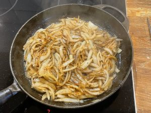
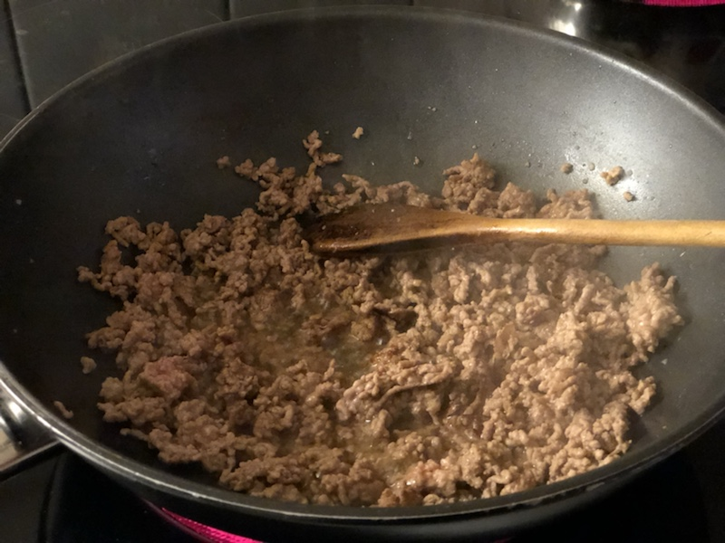

Spaghetti bolognese Instruktioner Tvätta händerna! Koka upp 3l vatten Finhacka löken Stek lök  Stek färsen i smör  Häll i krossade tomater Häll i vitlök och tomatpuré Stek 5min Garnera gärna med riven parmesan